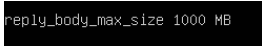
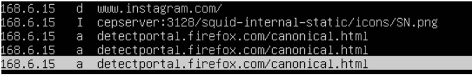

En este reto os explicamos cómo instalamos y configuramos el servidor proxy, pero antes de eso vamos a definir el proxy para que tengáis una idea. El servidor proxy es un servidor, programa o dispositivo, que hace de intermediario en las peticiones de recursos que realiza un cliente a otro servidor.
A continuación, explicaremos cómo hemos instalado y configurado el servidor proxy, el cual también se hará en una máquina virtual de Ubuntu Server. Para instalar el servidor proxy instalaremos el paquete squid y para configurar el proxy, primero permitirá acceder a los diferentes servicios a través de los puertos respectivos por defecto, la gestión de la denegación la realizaremos a través de un archivo llamado lista negra donde filtraremos a qué sitios no permitimos que accedan, en nuestro caso serían sitios de redes sociales que no será posible acceder a ellos, si más adelante debemos añadir alguna restricción más sólo tendremos que modificar el archivo lista negra creada anteriormente y por último se limitará el tamaño de los archivos a descargar a máximo 1Gb.
1. Instalación del servidor proxy.
1. Para empezar con la creación del firewall instalamos los iptables con el comando “apt install iptables” una vez instalado los iptables crearemos un script con las reglas del firewall en /etc/init.d , en mi caso llamare el archivo “fdenegar.sh”
2. Configuración del servidor proxy.
En este apartado lo que haremos es configurar el servidor proxy como indica el nombre del reto. Cuando ya tenemos instalado el servidor podemos empezar a configurar el servidor con el squid.
1. Tenemos que poner el puerto 3128 al servidor squid con lo cual veremos que puerto tenemos puesto en nuestro servidor. Con ss -antpl | grep 3128 veremos cual es el puerto que está habilitado y el que se usa.
2. Si no tenemos configurado el puerto 3128 (puerto por defecto que tiene el squid) tendremos que poner el siguiente comando para poner aplicarlo.
3. Después de haber puesto el puerto correspondiente tenemos que reiniciar el servidor.
4. Ahora vamos a permitir el acceso a los puertos, para poder hacer este apartado tenemos que abrir el archivo /etc/squid/squid.conf y una vez estamos dentro tenemos que buscar los acl y añadir la siguiente línea.
5. Ahora hay que buscar los http_access y añadir las siguientes líneas en ese apartado.
6. Debajo de estas líneas escribiremos http_port y el puerto al cual queremos permitir el acceso.
7. Ahora para empezar con este apartado crearemos un archivo que le pondremos como nombre “llista_negra” para denegar palabras en específico para que cuando un usuario intente entrar en una página con esa palabra, le aparezca que está denegado y no pueda entrar.
8. Cuando ya hemos creado y hemos añadido las palabras que queremos denegar con el proxy accedemos al archivo squid.conf, en el cual añadiremos la siguiente línea.
9. Esta línea es la última de los acls, seguidamente debajo de lo que acabamos de añadir, pondremos otra, en la cual denegamos este archivo.

10. Si todo está correcto el siguiente paso que haremos será poner la ip del servidor en un ubuntu desktop. Cuando ya lo hemos añadido la ip y está en el mismo rango buscaremos en el buscador una url con una de las palabras clave que hemos puesto anteriormente.Si está bien configurado nos aparecerá la siguiente imagen.
11. Una vez hecho esto, lo único que tenemos que hacer para el siguiente apartado es entrar en el archivo squid.conf y añadir la siguiente línea “reply_body_max_size 1000 MB”

12. Ahora, para ver el log que hacen las máquinas utilizando nuestro proxy tendremos que utilizar el siguiente comando “nano /var/log/auth.log”
13. En la siguiente parte usaremos una herramienta para poder analizar el log, nosotros hemos escogido squidview.
14. Para instalarlo lo único que haremos es añadir els siguiente comando para que proceda a instalarse.
15. Ahora que ya lo tenemos instalado podemos proceder a abrir el squidview con solamente poner su nombre tal que así.
16. Cuando hayamos entrado dentro del squid view nos aparece una pantalla con los log y la ip de quien ha entrado en aquella página.

17. En este apartado lo que hemos hecho ha sido entrar en el archivo del squid.conf como habíamos entrado anteriormente para otro apartado y lo que hicimos fue añadir acls de los puertos que faltaban abiertos.